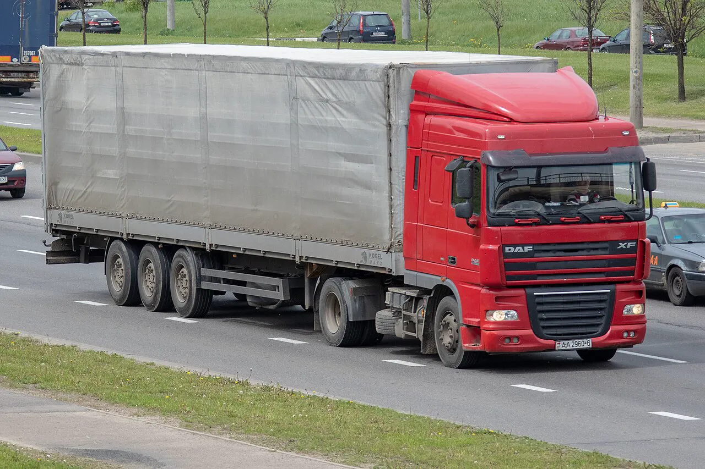
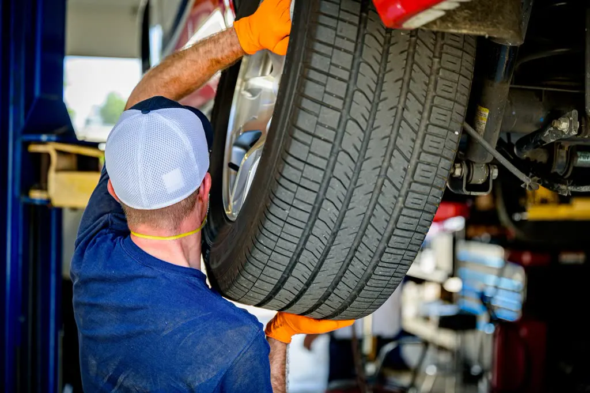
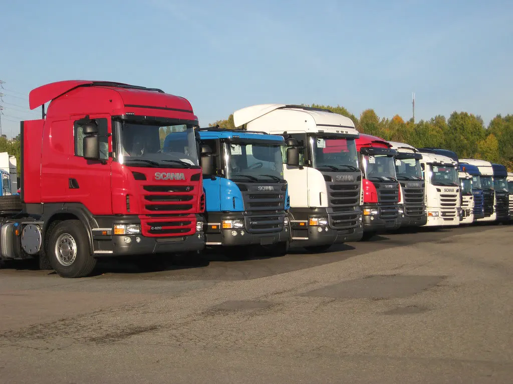

Bandenservice voor vrachtwagens en trailers
Onze dienstverlening is uitsluitend gericht op vrachtwagens, trailers en zware bedrijfsvoertuigen. Alles gebeurt op locatie: langs de weg of op uw terrein.


Snel een nieuwe band, op de plek waar u staat
Is een band versleten of te zwaar beschadigd, dan vervangen we hem ter plekke. We nemen de juiste maat mee, monteren met professioneel materieel en zetten de band op de juiste spanning.
- Stuur-, aandrijf- en trailerbanden
- Wielmoeren aangehaald op het voorgeschreven moment
- Oude band nemen we mee

Repareren waar het veilig kan
Een spijker of schroef in het loopvlak betekent niet altijd een nieuwe band. Waar het veilig en verantwoord kan, repareren we de band zodat u verder kunt met uw rit.
- Eerlijk advies: repareren of vervangen
- Controle van de andere band bij dubbellucht
- Klapband? Dan altijd vervangen

De werkplaats komt naar u toe
Montage en balanceren op de plek waar uw voertuig staat. Handig voor wagenparken: wij plannen het in wanneer uw voertuigen toch stilstaan, zodat niemand naar een werkplaats hoeft te rijden.
- Op uw bedrijfsterrein, ook buiten kantoortijd
- Meerdere voertuigen achter elkaar
- Factuur per kenteken

Opleggers, aanhangers en trailers
Service en vervanging van banden voor opleggers en aanhangers van zware voertuigen. Ook als de oplegger los op een terrein staat, zonder trekker erbij.
- Gangbare maten zoals 385/65 R22.5
- Losstaande opleggers op uw terrein
- Controle van de hele as bij schade
Bandenpech onderweg
Staat u op de vluchtstrook, een parkeerplaats of een bedrijventerrein? Wij rukken uit en helpen u ter plekke. Geef uw locatie door met de hectometerpaal of via WhatsApp, dan rijden we direct de goede kant op.
- Veilig werken naast de rijstrook
- Locatie delen via WhatsApp
- Korte lijnen met chauffeur en planning

Voorkomen is goedkoper dan stilstaan
Een band met te lage spanning slijt sneller, kost meer brandstof en klapt eerder. Wij controleren spanning en profiel van uw wagenpark op uw eigen terrein, en zeggen eerlijk welke banden binnenkort aan vervanging toe zijn.
- Spanning en profieldiepte per band
- Overzicht per kenteken
- Periodiek in te plannen
Welke band is het?
Tik de band aan op onze meldpagina. Dan weten wij precies wat we mee moeten nemen.